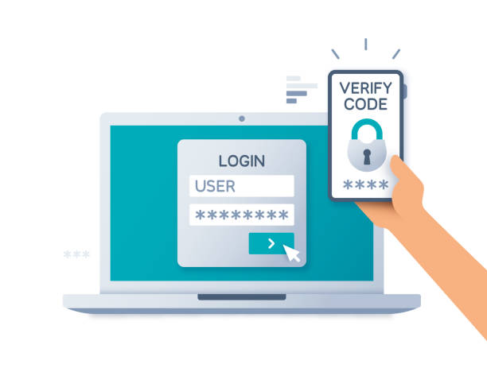
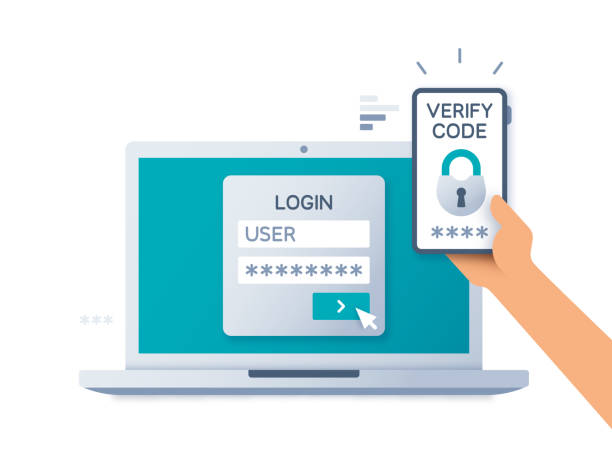

Passord er en sikkerhetsnøkkel som brukes for å bekrefte identiteten til brukeren, samt gi tilgang til de
rettighetene brukeren har.
 Gode passord tips:
Bruk setninger istedenfor bare ord eller mange ‘tilfeldige’ tegn og tall, dette gjør passordet
lengere, lettere og huske og mer sikker mot ‘brute-forceing’. Ulempen med passordet er at det er
lettere for andre å huske, selv om de bare har sett passordet 1 gang.
Store / små bokstaver, samt bruken av tall øker antall mulige kombinasjoner for et passord og gjør
derfor passordet mer ’unikt’, istedenfor at passordet er 1/100 mulige kombinasjoner blir passordet
1/10 000 kombinasjoner. Dette gjør det igjen vanskeligere for ‘brute-forceing’ og implementert med
første tipset øker det sikkerheten betydelig, men gjør det ikke mye vanskeligere å huske.
Hvis man derimot vil gjøre passordet vanskeligere å huske for de som ‘ser over skulderen din’, kan
man bruke en ‘tilfeldig’ kombinasjon av tall, små / store bokstaver og tegn. Disse er vanskeligere
og huske, er som regel kortere enn setninger (trenger ikke å være, men gjør de lettere å huske) og
er derfor mindre sikker mot ‘brute-forceing’. Hvis man vil gjøre de extra vanskelig å huske etter et
øyekast kan man legge flere symboler som ser like ut, etter hverandre, som for eksempel: IlIIIll
(stor I liten L) 00O00O0O00 (Stor O og 0) etc etc.
Ikke bruk samme passord over alt, del inn innloggingene i undergrupper som f.eks. 'sosiale media',
'Shopping', 'Bank' osv osv.
hvis det da skjer at et passord blir lekket er skadeområdet begrenset og det er begrenset hvor mange
passord man må endre i ettertid
Flerfaktor-identifisering er en metode å sikre innloggingene sine ved å ha to eller flere måter å
validere sin identitet, eksempel på dette er betaling eller uttak med bank-kort hvor man må ha
bank-kortet i fysisk form samt den tilsvarende pin-koden for å kunne bruke det. På nett er legger
man ofte inn telefon-nr sitt ved opprettelse av konto, hvor man da får en sikkerhetskode tilsendt på
SMS etter man har oppgitt riktig innlogging. Dette forhindrer noen fra å logge seg inn på kontoen
din hvis de får tak i passordet ditt.
Tilbake til hjemmeside
 Gode passord tips: